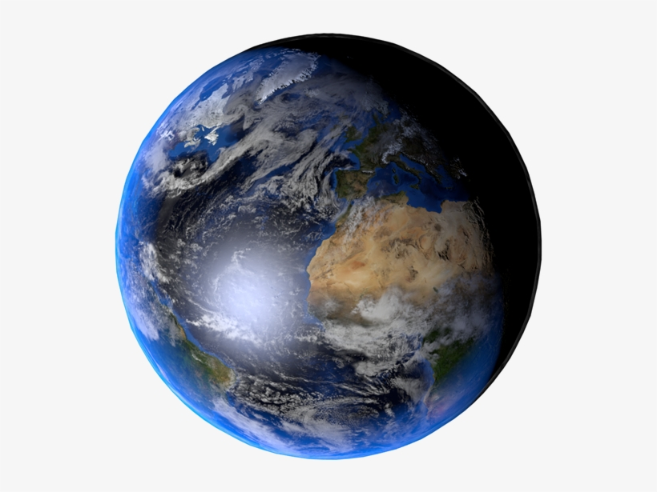

Earth rotates on its axis every 23.9 hours, defining day and night for surface dwellers. This axis of rotation is tilted 23.4 degrees away from the plane of Earth's orbit around the sun, giving us seasons. Whichever hemisphere is tilted closer to the sun experiences summer, while the hemisphere tilted away gets winter. In the spring and fall, each hemisphere receives similar amounts of light. On two specific dates each year—called the equinoxes—both hemispheres get illuminated equally.